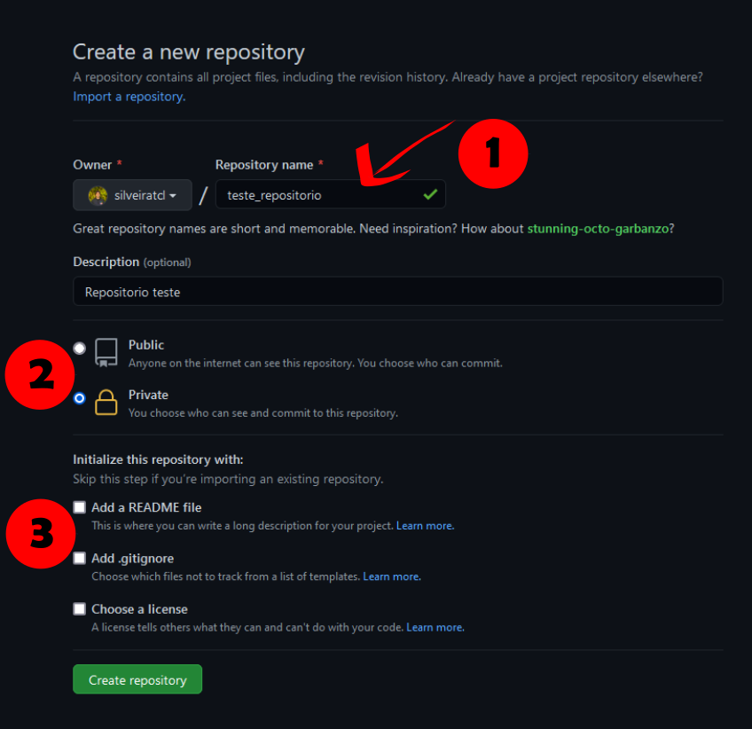
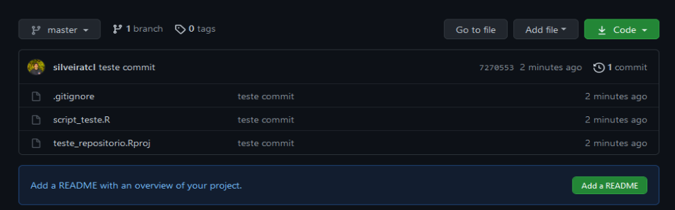

Atividade 4
A atividade 4 vai incluir algumas subatividades para podermos
interagir com as atividades anteriores e inserir algumas novas
ferramentas.
4.1 R Markdown
A primeira parte da atividade consiste em tranformar a rotina criada
na atividade 3 em um formato mais amigável
de ser compartilhado. Muitas vezes criamos o próprio estilo ao construir
rotinas e deixamos alguns detalhes e explicações de lado. No entanto,
para que outras pessoas possam construir em conjunto é importante que
todos os detalhes estejam descritos na rotina. Os documentos no formato
markdown permitem mesclar trechos de texto com códigos, o
que facilita muito a explicação dos passos utilizados para criarmos
documentos, explicar o racional de análises em uma pesquisa, produzir
conteúdo didático e outros. Quando já entendemos o formato
R Markdown iremos iniciar todo o processo já construindo
este documento e não transferindo o código como iremos fazer aqui. Esse
método foi escolhido para mostrar que além de podermos criar de maneira
mais organizada nossas futuras rotinas, podemos lidar com um ‘passivo’
das rotinas associadas a trabalhos mais antigos para podermos nos
organizar melhor, e aprender no caminho.
Os passos aplicados aqui serão os mesmos para começar um documento do
zero ou para fazermos essa transferência proposta no exercício.
- O primeiro passo é criar um documento R Markdown no RStudio. Para
isso, clique no menu
File->New file->R Markdown.

- Em seguida, escolhemos o tipo de output (vamos usar o
padrão HTML), dar um nome ao arquivo (atividade4) e
clicar em
OK.

- O documento criado já apresenta um exemplo com o cabeçalho e alguns
chunksde código.

Antes mesmo de editarmos o documento, podemos ter um ideia de como
será sua versão final clicando no botão Knit no alto da
tela de comandos.

- Agora, vamos limpar o documento e começar a inserir nossos próprios
chuncksde código, conforme indicado na aula 4. Em seguida, basta copiar os trechos de código já criados dentro de cadachunkseguindo uma lógica dos passos utilizados em cada etapa.
Mas não se esqueça, daqui pra frente, já pode começar seu documentos
direto como R Markdown.
4.2 GitHub
Agora vamos à segunda parte da atividade 4.
Para isso precisamos:
A etapa 1 já foi concluída como pré-requisito do curso, então vamos
às próximas.
PS: este tutorial de Git e GitHub foi adaptado do material criado
pelos colegas Thiago
Silveira e Ben
Best.
4.2.1 Criando uma conta no GitHub
Para criar uma conta no GitHub basta acessar o site https://github.com/, clicar
em Sign up no canto superior direito da tela e seguir as
instruções.


Depois de criado, basta acessar seu GitHub.
4.2.2 Configurando o Git no RStudio
Agora, vamos ao RStudio para configurar o acesso do Git.
No RStudio ache a aba Terminal e insira os seguintes
comados, um de cada vez.
Substitua USER e USER@SEUEMAIL.COM com o
seu. No meu caso seria cammcordeiro e
cammcordeiro@pq.uenf.br.
# mostrando a versão do git em seu computador
git --version
# mostrando o caminho das pastas em seu Mac/Linux
which git
# mostrando o caminho das pastas no Windows
where git
# troque USER com o seu nome de usuário do Github
git config –-global user.name USER
# troque USER@SEUEMAIL com o seu email resgistrado no Github
git config –-global user.email USER@SEUEMAIL.COM
# use git "merge" (default) para resolver possíveis conflitos git "pull" conflicts
git config --global pull.rebase true
# listando "config" para confirmar as variáveis de user.*
git config --listAgora acesse Tools -> Global Options e selecione
Git/SVN no menu lateral. No campo Git
executable insira o caminho das pastas baseados nos comandos
anteriores (Note que eles são diferentes para Mac/Linux
which git e Windows where git).
Essa configuração parece ser desafiadora em um primeiro momento, mas
felizmente este procedimento é bem documentado em Happy
Git and GitHub for the useR se tiver algum problema.
4.2.3 Criando repositório (ou REPO) no GitHub
Após a instalação e configuração do Git/R/RStudio e criar uma conta no Github, o próximo passo é criar repositório.
Logo após fazer o login no Github você deverá ver a página inicial de seu perfil como abaixo.

À esquerda você poderá ver a lista com alguns repositórios e o botão New. Clique neste botão para criarmos um novo repositório. Nesta página você vai configurar o seu repositório:
- Dê um nome para seu repositório
- Especifique se será público ou privado
- Especifique se você quer adicionar um aquivo README, .gitignore e o tipo de licença (caso seja público. Mais detalhes no link “learn more”)

Depois de configurado você pode clicar em Create repository.
Agora que temos o repositório no Github, o próximo passo é cloná-lo
com um projeto de controle de versão no RStudio. Deixe a página acima
aberta no seu navegador, pois vamos precisar dela no próximo passo.
4.2.4 Criando projeto no RStudio clonando o repositório do Github
Abra o RStudio e clique em File -> New Project
Uma caixa irá abrir, selecione Version Control

- Logo após abrirá em outra janela, selecione Git. Uma nova janela abrirá.

- Volte ao Github, copie a URL do repo que você criou em 4.2 Criando repositório no GitHub

- Volte ao RStudio e cole a URL do repo em Repository URL

Na mesma janela digite o nome do diretório em Project directory name
Ainda na mesma janela, selecione a pasta onde colocar o repositório clonado do github no campo Create project as subdirectory of
Se tudo ocorreu sem problemas até aqui, você clonou o repo do Github em sua máquina. A partir de agora você está apto a realizar mundanças controladas pelo Git e sincronizar tudo no repositório on line.
Nas próximas seções veremos alguns comandos básicos de controle de versão no nosso repo recém criado.
4.3 Workflow RStudio/Github
4.3.1 Controle de versão:
commit e push
Agora podemos criar um script teste para fazermos o primeiro
commit e push, abaixo um resumo do será
realizado:
| Comando | Ação |
|---|---|
commit |
Nova versão, anota as alterações salvas e cria um código |
push |
Envia as alterações para seu repositório no Github |
Observando o painel Files no RStudio você verá que alguns arquivos foram adicionados. Temos um .gitignore, .Rhistory e teste_repositorio.Rproj. Criando um novo script e salvando (script_teste.R), o painel Files ficará como abaixo.

Após a criar e salvar um script teste, o painel Git deve estar parecido como o abaixo:

Veja que estão listados alguns arquivos, toda e qualquer alteração salva neste diretório será listada neste painel. Se você selecionar Staged você está aprovando a mundança no arquivo. Em Status pode ser A de “added”, M significa “modified” e ainda não adicionado.

Com todos os arquivos marcados Staged, o próximo
passo é fazer um commit, ou seja, registrar (ou anotar)
todas as alterações realizadas, pois podo o commit deve ter
uma mensagem indicando o que foi realizado. Clicando em
commit você registra as alterações e pode comentar as
principais mudanças no campo Commit message, por
exemplo. Clique em commit nesta janela Review
Changes.

Após isso você verá a janela abaixo mostrando a execução do comando
commit.

Após isso estamos aptos para fazer o push. Clicando em
push você envia de fato a nova versão para o seu repo no
Github.

Depois de chegar até aqui, confira seu repositório no Github e veja a versão atualizada. Deve estar similar a figura abaixo.

4.3.2 Colaboração:
fork, branch, pull request e
merge
Agora que já vimos como fazer as principais ações usando o Git e Github, a partir deste ponto podemos executar um grupo de comandos que consiste na grande vantagem de se usar o Github: a colaboração com controle de versão. Abaixo um resumo dos comandos abordados:
| Comando | Ação |
|---|---|
fork |
Copia um diretório do Github |
branch |
Cria um novo “ramo” em seu repositório |
pull request |
Solitação de contribuição |
merge |
Incorporar um ramo criado ao ramo “master” |
Para colaborar em um repositório você antes de mais nada copiar os
arquivos para o seu Github. Essa ação é executada com o
comando fork. Por exemplo, se dirija ao respositório de
teste - ciencia_colab_a4 e localize no alto da
página o botão fork. Depois escolha onde você gostaria de
colocar, escolha seu usuário. No canto esquerdo da página mostrará que o
reposotório está em seu usuário também.

Agora faça novamente os passos descritos em Criando repositório no GitHub. Tenha certeza de criar uma nova pasta fora das pastas que você já está trabalhando.
Abra o projeto do repositório clonado (CCBD_atividade4) no RStudio.
Agora o repositório deve ser acessado pelo https://github.com/SEU_USUÁRIO/ciencia_colab_a4. Abra o
arquivo partipantes.csv, e edite adicionando seu nome e
nome de usuário do GitHub. Salve, faça o
commit e o push.
Agora navegue até o respositório da atividade 4 recém clonado e clique em Contribute.

Aparecerá uma nova página comparando o script antigo com o novo.
Clique em Create pull request. Com o objetivo de facilitar a colaboração, é necessário que você comente o objetivo da sua contribuição.

Clique novamente no botão Create pull request para confirmar sua contribuição. Visualize a página https://github.com/cammcordeiro/ciencia_colab_a4 e veja como ficou.

Agora que você fez um pull request, e basta aguardar o
administrador do repositório analisar sua sugestão e fazer o
merge no ramo master.
Para mais informações sobre o workflow usando o Github, acesse Github Guides. Um guia muito útil também é o Happy Git and Github for the useR.
Colabore, compartilhe, e cite as fontes!